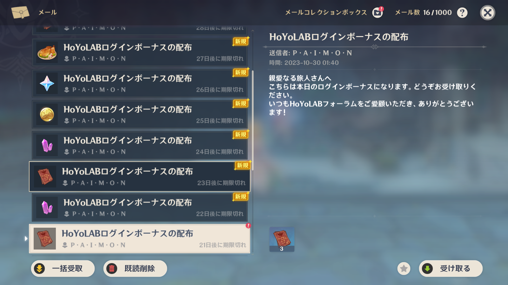
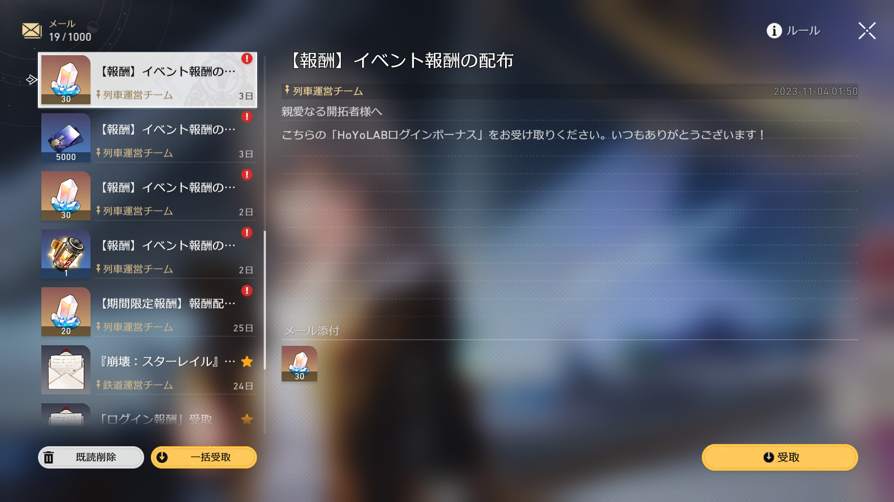
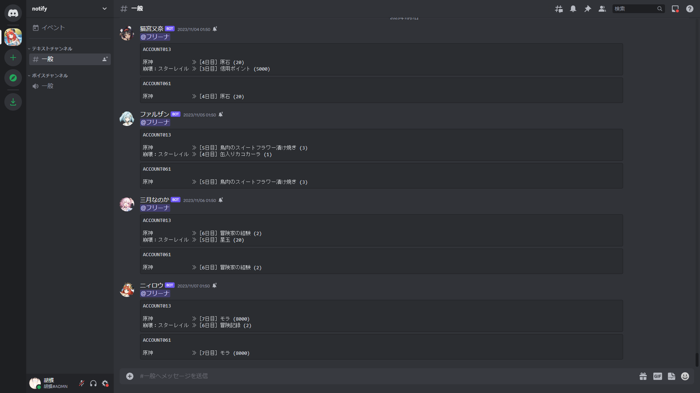

Google Apps Script(GAS)を使用して、原神やスターレイルのログインボーナスを自動的に取得させる
※使用に際して如何なる問題が発生した場合であっても、サイト管理人は一切の責任を負いません。
概要
1. 毎日自動でログインボーナスを取得します。

2. 取得時にDiscordへ通知を送ることが可能です。

設定方法
1. 『
Google Apps Script』から『新しいプロジェクト』を選択して、以下のコード(164行)全文を貼り付けます。
const profiles = [
{ accountName: "アカウント名",
genshin: true,
honkai_star_rail: false,
honkai_3: false,
token: "ltuid_v2=000000000; ltoken_v2=v2_OOOOOOOOOOOOOOOOOOOOOOOOOOOOOOOOOOOOOOOOOOOOOOOOOOOOOOOOOOOOOOOOOOOOOOOOOOOOOOOOOOOOOOOOOOOOOOOOOOOOOOOOOOOOOOOO;" }
];
const discord_notify = true;
const discord_silent = false;
const myDiscordID = "000000000000000000";
const discordWebhook = "https://discord.com/api/webhooks/0000000000000000000/OOOOOOOOOOOOOOOOOOOOOOOOOOOOOOOOOOOOOOOOOOOOOOOOOOOOOOOOOOOOOOOOOOOO";
/** /_/_/_/_/_/_/_/_/_/_/_/_/_/_/_/_/_/_/_/_/_/_/_/_/_/_/_/_/_/_/_/_/_/_/_/_/_/_/_/_/_/_/_/_/_/_/_/_/
※上記が設定項目になります。設定方法につきましては"Honey Apricot"よりご確認下さい。
Honey Apricot（https://genshinvideo.github.io/HuTao/）＞胡蝶の夢と泡沫の夢。＞AutoSign
※正常に動作しない可能性がありますので、ここより以下のコードは書き換えないで下さい。
/_/_/_/_/_/_/_/_/_/_/_/_/_/_/_/_/_/_/_/_/_/_/_/_/_/_/_/_/_/_/_/_/_/_/_/_/_/_/_/_/_/_/_/_/_/_/_/_/ **/
const urlDict = {
Genshin: 'https://sg-hk4e-api.hoyolab.com/event/sol/sign?lang=ja-jp&act_id=e202102251931481',
Star_Rail: 'https://sg-public-api.hoyolab.com/event/luna/os/sign?lang=ja-jp&act_id=e202303301540311',
Honkai_3: 'https://sg-public-api.hoyolab.com/event/mani/sign?lang=ja-jp&act_id=e202110291205111'
}
async function main() {
const messages = await Promise.all(profiles.map(autoSignFunction));
if(discord_notify == true){
const hoyolabResp = `${discordPing()}\`\`\`\n${messages.join('\`\`\`\`\`\`\n')}\`\`\``;
if(discordWebhook) {
postWebhook(hoyolabResp);
}
}
}
function discordPing() {
if(myDiscordID) {
return `<@${myDiscordID}>`;
} else {
return '';
}
}
function autoSignFunction({ token, genshin, honkai_star_rail, honkai_3, accountName }) {
const urls = [];
if (genshin) urls.push(urlDict.Genshin);
if (honkai_star_rail) urls.push(urlDict.Star_Rail);
if (honkai_3) urls.push(urlDict.Honkai_3);
const header = {
'Cookie': token,
'Accept': 'application/json, text/plain, */*',
'Accept-Encoding': 'gzip, deflate, br',
'Connection': 'keep-alive',
'x-rpc-app_version': '2.34.1',
'User-Agent': 'Mozilla/5.0 (Windows NT 10.0; Win64; x64) AppleWebKit/537.36 (KHTML, like Gecko) Chrome/114.0.0.0 Safari/537.36',
'x-rpc-client_type': '4',
'Referer': 'https://act.hoyolab.com/',
'Origin': 'https://act.hoyolab.com'
};
const options = {
method: 'POST',
headers: header,
muteHttpExceptions: true,
};
const options_ = {
method: 'GET',
headers: header,
muteHttpExceptions: true,
};
let response = `${accountName}\n`;
const httpResponses = UrlFetchApp.fetchAll(urls.map(url => ({ url, ...options })));
for (const [i, hoyolabResponse] of httpResponses.entries()) {
const checkInResult = JSON.parse(hoyolabResponse).message;
const enGameName = Object.keys(urlDict).find(key => urlDict[key] === urls[i])?.replace(/_/g, ' ');
switch (enGameName) {
case 'Genshin':
gameName = '原神 ';
break;
case 'Star Rail':
gameName = '崩壊：スターレイル';
break;
case 'Honkai 3':
gameName = '崩壊３ｒｄ ';
break;
}
const isError = checkInResult != "OK";
const bannedCheck = JSON.parse(hoyolabResponse).data?.gt_result?.is_risk;
if(bannedCheck){
response += `\n${gameName} ≫ CAPTCHA認証に失敗しました。手動でログインを試みて下さい。`;
}
else{
if (`${gameName}` == "原神 ") {
if (`${checkInResult}` == "OK") {
const GI_Days = JSON.parse(UrlFetchApp.fetch('https://sg-hk4e-api.hoyolab.com/event/sol/info?lang=ja-jp&act_id=e202102251931481', options_));
const GI_Item = JSON.parse(UrlFetchApp.fetch('https://sg-hk4e-api.hoyolab.com/event/sol/home?lang=ja-jp&act_id=e202102251931481', options_));
response += `\n${gameName} ≫` + "［" + GI_Days.data.total_sign_day + "日目］" + GI_Item.data.awards[GI_Days.data.total_sign_day - 1].name + " (" + GI_Item.data.awards[GI_Days.data.total_sign_day - 1].cnt + ")";
} else {
response += `\n${gameName} ≫ ${checkInResult}`;
}
} else {
if (`${gameName}` == "崩壊：スターレイル") {
if (`${checkInResult}` == "OK") {
var SR_Days = JSON.parse(UrlFetchApp.fetch('https://sg-public-api.hoyolab.com/event/luna/os/info?lang=ja-jp&act_id=e202303301540311', options_));
const SR_Item = JSON.parse(UrlFetchApp.fetch('https://sg-public-api.hoyolab.com/event/luna/os/home?lang=ja-jp&act_id=e202303301540311', options_));
response += `\n${gameName} ≫` + "［" + SR_Days.data.total_sign_day + "日目］" + SR_Item.data.awards[SR_Days.data.total_sign_day - 1].name + " (" + SR_Item.data.awards[SR_Days.data.total_sign_day - 1].cnt + ")";
} else {
response += `\n${gameName} ≫ ${checkInResult}`;
}
} else {
response += `\n${gameName} ≫ ${checkInResult}`;
}
}
}
};
return response;
}
function postWebhook(data) {
try {
var bot = JSON.parse(UrlFetchApp.fetch('https://raw.githubusercontent.com/GenshinVideo/HuTao/main/AutoSign/bot.json'));
var RandomSelect = Math.floor(Math.random()*bot.data[0].count);
} catch (e) {
var bot = JSON.parse(JSON.stringify({
list: [
{
"name": "ニィロウ",
"avatar": "https://webstatic.hoyoverse.com/upload/contentweb/2022/09/28/a5f2a564298709911b3ceef0289d183c_7626591551165379807.png"
}
]
}));
var RandomSelect = 0;
}
if(discord_silent != true){
var payload = JSON.stringify({
'username': bot.list[RandomSelect].name,
'avatar_url': bot.list[RandomSelect].avatar,
'content': data
});
} else {
var payload = JSON.stringify({
'username': bot.list[RandomSelect].name,
'avatar_url': bot.list[RandomSelect].avatar,
'content': data,
'flags': 4096
});
}
const options = {
method: 'POST',
contentType: 'application/json',
payload: payload,
muteHttpExceptions: true
};
UrlFetchApp.fetch(discordWebhook, options);
}
2. ［GAS］アカウント情報を書き換えます。（青文字を参考にして下さい。）
const profiles = [
{ accountName: "アカウント名", /** 自由に書き換えられます。 **/
genshin: true, /** ログインボーナスを取得して欲しい場合は『true』に、そうでない場合は『false』と書き換えます。 **/
honkai_star_rail: false,
honkai_3: false,
token: "ltuid_v2=000000000; ltoken_v2=v2_000000000;" } /** アカウントのCookie情報に書き換えて下さい。 **/
];
※『アカウントのCookie情報』は以下の手順から取得することが可能です。
『
HoYoLAB』にてログインが行われている状態で、下記JavaScriptをコンソールから実行することで、アカウントのCookie情報がクリップボードに保存されます。
コンソールはショートカットから開くことが可能です。（例：Chrome［Ctrl + Shift + I］）
※エラーが発生する場合は、再ログインやブラウザの変更を試みて下さい。それでも動作しない場合はCookie-Editorなどのアドオンを利用して必要なCookie情報を取得して下さい。
function getCookie(name) {
var value = `; ${document.cookie}`;
var parts = value.split(`; ${name}=`);
if (parts.length === 2) return parts.pop().split(';').shift();
}
let token = 'Error';
if (document.cookie.includes('ltoken=')) {
token = `ltuid=${getCookie('ltuid')}; ltoken=${getCookie('ltoken')};`;
} else if (document.cookie.includes('ltoken_v2=')) {
token = `ltuid_v2=${getCookie('ltuid_v2')}; ltoken_v2=${getCookie('ltoken_v2')};`;
}
copy(token);
スマートフォンなど、コンソールからJavaScriptを実行出来ない場合は『
ブックマークレット』を利用して下さい。
※ブックマークレットとは、リンクをブックマークし、該当ページでそのブックマークを開くことでJavaScriptが実行されるというものです。
アカウントが複数ある場合は、行を増やし同じ作業を行って下さい。
const profiles = [
{ accountName: "アカウント名",
genshin: true,
honkai_star_rail: false,
honkai_3: false,
token: "ltuid_v2=000000000; ltoken_v2=v2_000000000;" },
{ accountName: "アカウント名 2",
genshin: true,
honkai_star_rail: false,
honkai_3: false,
token: "ltuid_v2=000000000; ltoken_v2=v2_000000000;" }
];
4. ［GAS］Discordの通知設定を書き換えます。（青文字を参考にして下さい。）
const discord_notify = true; /** Discordに通知を送信する場合は『true』を、そうでない場合は『false』と書き換えます。 **/
const discord_silent = false; /** 通知を行う際に、通知音を鳴らさない場合は『true』を、そうでない場合は『false』と書き換えます。 **/
const myDiscordID = "000000000"; /** 通知を行う際に、自身にメンションする場合は『ユーザーID』を、そうでない場合は『空（""）』に書き換えます。 **/
const discordWebhook = "https://discord.com/api/webhooks/000000000/OOOOOOOOO"; /** 通知を行う際に、メッセージを送信するテキストチャンネルのウェブフックURLに書き換えて下さい。 **/
※『ユーザーID』と『ウェブフックURL』はDiscordから取得することが可能です。
・ユーザーID
設定≫
詳細設定≫
開発者モードをONにした後、設定を閉じ、左下の自身のアイコンをクリックし、
ユーザーIDをコピーを選択
・テキストチャンネルのウェブフックURL
送信させたいテキストチャンネルを右クリックし
チャンネルの編集≫
連携サービス≫
ウェブフックを作成≫
＞≫
ウェブフックURLをコピーを選択
※スマホアプリからはウェブフックの作成が行えませんので、ブラウザから『
Discord』を開いて作成します。
5. ［GAS］実行のテストを行う。
スクリプトの書き換えが完了したら保存を行い、画面上部にある
実行ボタンをクリックして実際の処理を確認します。
ログインボーナスの取得或いは、Discordへ通知が送られていれば正常に動作していることを示しています。
6. ［GAS］トリガーを設定する。
画面左にあるタブから
トリガーを選択し、
トリガーを追加をクリック。
実行する関数を選択：main
実行するデプロイを選択：Head
イベントのソースを選択：時間主導型
時間ベースのトリガーのタイプを選択：日付ベースのタイマー
時刻を選択：午前１時～２時
エラー通知設定：任意
上記のような設定にして保存することで、毎日指定した時間帯に自動で処理が行われます。